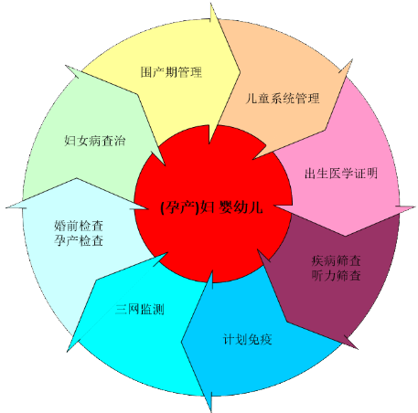

➢ 打破业务界限，建立以孕产妇、婴幼儿健康档案为中心的全程贯穿的妇幼保健信息系统。

➣ 打破单位界限，建立全地区的集中、共享的妇幼保健信息。
➢ 建立同时满足业务、管理、服务、科研的四位一体智能信息系统。
妇保业务
儿保业务
妇幼管理
应用效果
地图展示妇幼工作动态和统计分析指标数据
产品优势
产品价值
1. 全程贯穿、全面覆盖：妇幼卫生保健工作的全过程贯穿，妇保、儿保的紧密整合，重大专项全面涵盖；
2. 智能处理：高危孕产妇自动评价、体弱儿自动管理；
3. 专家支持：危重指导意见、孕育温馨提示、儿童保健指导、健康宣教；
4. 信息找人：通过便捷的提示（体检、新筛、听筛），便于主动服务；
5. 妇幼业务无纸化：业务单据打印、业务登记本、业务报表、管理报表自动生成。
典型案例
肇庆市妇幼保健院是于1996年10月在肇庆市第二人民医院的基础上挂牌成立的专科医院。目前，我院是集医疗、教学、科研、预防、保健、康复为一体的三级综合医院和三级妇幼保健院，是广东医科大学附属肇庆妇幼医院，是肇庆市妇女儿童医院。